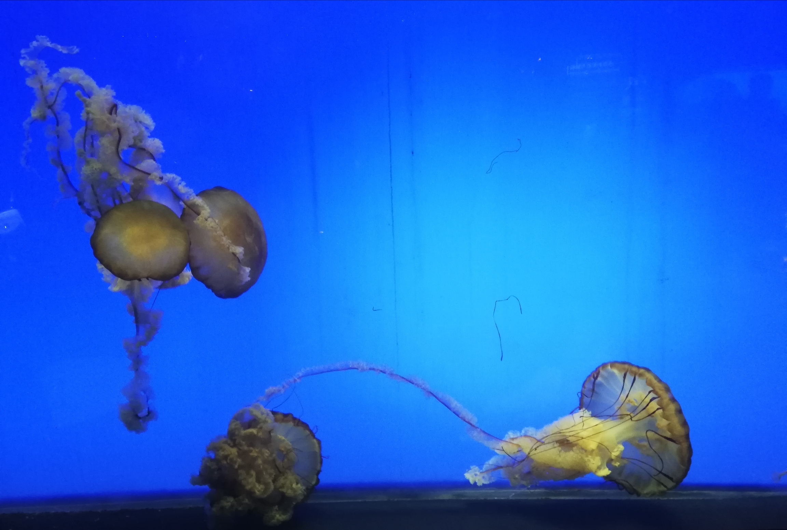

Voici quelques endroits magnifiques !
Voir mon blogpost
Shanghai Tower
La Shanghai Tower est le 2ème plus haut gratte-ciel du Monde

Temple du Bouddha de Jade
Temple bouddhiste fondé en 1882, en plein coeur de Shanghai

Leifang Pagoda
Pagode situé près du lac de l'Ouest dans la ville de Hangzhou

Aquarium de Shanghai
Aquarium qui possède le plus long tunnel sous l'eau du monde
Jardin Yuyuan
Ce jardin est considéré comme l'un des jardins chinois les plus somptueux de la région